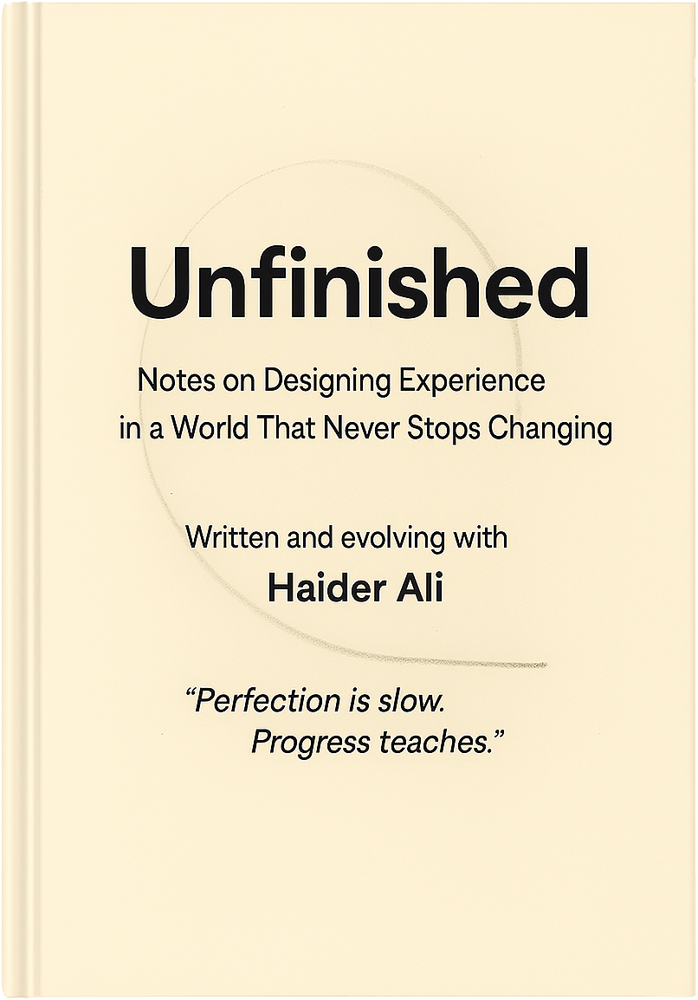

Unfinished
Notes on Building in a World That Never Stops Changing
Written and evolving with Haider Ali

About the book
Unfinished is a book about the gap between good work and work that actually lands. It follows five practitioners inside a complex organisation as they learn that craft, research, and polish are not enough if nobody has studied the room where the work must survive.
The book gives builders, designers, product people, analysts, and leaders a practical way to read that room before they build for it: who actually decides, what they need right now, what the system can absorb, and what smallest version can enter the room.
Who it’s for
- Practitioners doing strong work that keeps failing to land
- Designers, product managers, researchers, analysts, and strategists working inside complex organisations
- Leaders trying to move work through invisible decision systems without relying on polish alone
- Teams that need honest diagnosis before another plan, prototype, or recommendation hardens into the wrong solution
You’ll learn to ask
- Who actually decides whether this work survives?
- What do they actually need right now?
- What can this system genuinely absorb?
- What is the smallest version that can enter the room and begin a real conversation?
Speaking & Workshops
Plan a keynote, workshop, or book club session tailored to your team. Share questions, collaborate, and explore how staying unfinished can unlock innovation.
Recent writing
-
Unfinished — Sample Chapter
Read a free sample from Unfinished — a living manuscript about crafting experiences that evolve with people, systems, and time.
-
When Design Systems Become Monuments
Why most design frameworks fail—and how to build systems that stay alive through continuous evolution and intelligent adaptation.
-
Chapter 3: Building Trust When the Ground Keeps Shifting
Why your roadmap doesn't match your promises—and what design leaders can do about it.